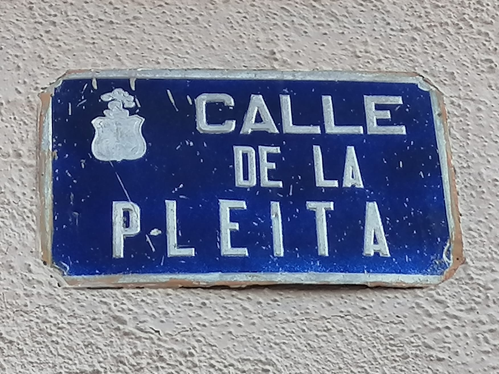

Motivación

La invención de la escritura es conocida por marcar el paso de la Prehistoria a la Historia. Otra perspectiva considera dicho hito como la primera vez que los humanos demostramos la capacidad de procesar y analizar el lenguaje, sentando las bases para lo que hoy conocemos como Procesamiento del Lenguaje Natural (PLN, NLP por sus siglas en inglés).
En el presente, el amplísimo campo del PLN cubre todo lo relacionado con cómo los ordenadores “entienden”, procesan o producen los idiomas que hablamos las personas, es decir, el lenguaje natural, tanto en su forma escrita como oral. El producto más popular de este área de estudio son los (Chat)GPT, modelos del lenguaje generativos capaces de resumir textos, escribir poesía o solucionar problemas matemáticos. Sorprendentemente, en un pasado más bien cercano, se empleó mucho tiempo, esfuerzo y dinero en crear algoritmos que cumplieran con tareas a simple vista más sencillas, como:
- Lematizar automáticamente la raíz de las palabras (¿cómo hacemos que un ordenador sepa que la raiz de la palabra "dijímos" es "decir"?),
- Reconozcer automáticamente nombres propios para anonimización de documentos (¿cómo hacemos que un ordenador entienda que "María" o "Mercadona" son nombres propios?),
- Detectar la categoría gramatical de la siguiente palabra en una oración (¿es la palabra “como” la primera persona del singular del verbo “comer” o es una conjunción como en “todo está como antes”)?
- Representen palabras en forma numérica para que los ordenadores puedan manejarlas sin perder sus significados.
Hace miles de años, asignamos símbolos escritos a información que hasta entonces solo se transmitía de forma oral, efímera (vamos a olvidarnos por lo pronto de que ahora podemos grabar nuestra voz). Sin embargo, esto requería un cierto entendimiento comunitario, ciertas reglas y estándares para que todos entendieran que un símbolo se refería a un sonido. Podemos trazar una analogía con el campo del Procesamiento del Lenguaje Natural, pues este se ocupa de conseguir convertir información no estructurada (en época prehistórica, ideas orales; en la actualidad, palabras escritas) en una forma estructurada y procesable (antaño, la escritura en piedra, hoja o papel; hogaño, vectóres numéricos que representan el significado de las ideas).
Como se puede imaginar, el área del PLN es inmenso. Se aplica a la detección automática de mensajes de odio en Internet, a la traducción automática de idiomas, al procesamiento del habla (señales) o la creación de sistemas de recomendación y publicidad, entre muchos otros. Navegar por este vasto océano de posibilidades en busca de un tema para una tesis puede ser una tarea ardua, especialmente si una no le hace ascos a ningún campo. Así que esta autora, para liberarse del asfixiante peso de la libre elección, echó mano de las principales plataformas de empleo para aclararse las ideas. La oportunidad más llamativa, por razones que entenderán enseguida, vino de Alemania, desde la sede de Stuttgart de la Sociedad Fraunhofer (importantísima red de institutos conocida especialmente por inventar el airbag o el formato MP3):
" [En Alemania] hay una aguda escasez de mano de obra cualificada para el Mantenimiento Industrial. Los conocimientos técnicos no se están trasmitiendo ni a las siguientes generaciones ni a legos en la materia, lo que invita a investigar y poner en práctica nuevas tecnologías para gestionar y transferir el saber y pericia de los expertos. Un ejemplo de dichas tecnologías son los asistentes conversacionales. En este Trabajo de Fin de Grado o Máster proponemos desarrollar un chatbot especializado en el Mantenimiento Industrial que ocupe el papel de un curtido técnico superior.Texto original en alemán
La descripción del problema y la solución propuesta es curiosa e invita a pensar:
¿Qué otros saberes se están quedando en el olvido por no ser transmitidos a los jóvenes de hoy?
Se nos viene a la cabeza la machacona insistencia de cierta abuela en enseñarnos a coser, como se hacía antes. Quien dice coser, dice cocinar los platos típicos. Tirando del hilo llegamos, en definitiva, a toda la sabiduría de nuestros mayores, que también el la sabiduría de nuestros pueblos. Si somos sinceros, ¿quiénes de las nuevas generaciones...
- sabemos para qué servían estas piedras o qué significa el refran “En buen año, o malo, pavas hay en mayo”?
- sabemos desde cuándo disfrutamos de la facilidad de abrir un grifo y tener agua en nuestras propias casas? ¿Cómo se gestionaba antiguamente los suministros de agua?
- sabemos qué es la pleita y cómo se diferencia de la cordeta o el ramal?
- conocemos qué pasó en nuestro pueblo durante importantes episodios históricos, como la Reconquista, la Guerra de la Independencia, la Guerra Civil, la Transición?

Algunas de estas de estas preguntas las podrían resolver rápidamente nuestros abuelos, otras se encuentran ya en los libros de Historia. En cualquier caso, son cuestiones que, probablemente, las nuevas generaciones no sabrían responder. Sugerimos entonces:
¿Si un renombrado centro de investigación mundial plantea solucionar la falta de transmisión de conocimiento técnico a las nuevas generaciones con un chatbot, por qué nuestro pueblo no puede disponer de una misma tecnología para honrar y preservar el saber adquirido en el pasado?Pero, ¿cómo conseguimos que un ordenador responda preguntas cuya respuesta es desconocida por una parte de población cada vez más grande?
Esta última es una pregunta para el siguiente capítulo: Recopilación de datos.